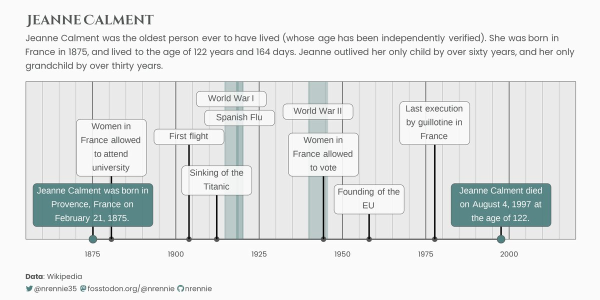

library(tidyverse)
library(showtext)
library(showtextdb)
library(patchwork)
library(camcorder)
library(ggtext)
library(glue)Verified Oldest People
Tidy Tuesday 2023 Week 22 (05/29-06/04)
Introduction
Image Source: Free Old lady reading book Illustration by IconScout Store
The data this week comes from the Wikipedia List of the verified oldest people. The data was created by frankiethull on GitHub.1
These are lists of the 100 known verified oldest people sorted in descending order by age in years and days.
The oldest person ever whose age has been independently verified is Jeanne Calment (1875–1997) of France, who lived to the age of 122 years and 164 days.[b] The oldest verified man ever is Jiroemon Kimura (1897–2013) of Japan, who lived to the age of 116 years and 54 days.
The oldest known living person is Maria Branyas of Spain, aged 116 years, 88 days. The oldest known living man is Juan Vicente Pérez of Venezuela, aged 114 years, 4 days. The 100 oldest women have, on average, lived several years longer than the 100 oldest men.
Libraries
Data
# tuesdata <- tidytuesdayR::tt_load(2023, week = 22)
# centenarians <- tuesdata$centenarians %>%
# write_csv(path = "data/centenarians.csv")
centenarians <- read_csv("data/centenarians.csv") Loading Fonts
I have been in love with the Quicksand font of late. I think it’s simple, and easy on the eyes and it doesn’t look either too formal or too casual. I hope my interpretation of the font is correct because I have been using it for some important documents.
font_add_google("Quicksand", "Quicksand")
showtext_auto()Make Events Data
The actual plot with the data is going to be a timeline showing the lifespan of the longest living individual, Jeanne Calment. Calment lived in Provence, France from 1875 to 1997. Add to this life span are the major events during that time span, such as the world wars. This based on the work of Nicola Rennie nrennie on Mastadon | nrennie35 on Twitter, and nrennie on Github. I chose their work because of the timeline nature of the viz. I have been looking for a good way to show a timeline viz using ggplot and I think this is it.

events <- tibble(
x = ymd(
"18800901", "19031217", "19120412", "19440421",
"19580101", "19770910"
),
y = c(1, 1.5, 0.7, 1.0, 0.4, 1.5),
label = c(
"French women attend university",
"The first flight",
"Titanic sinks",
"French women can vote",
"Founding of the EU",
"Last execution by guillotine"
)
)# start recording -- To Create a gif of the project
gg_record(
dir = file.path("img/plots"), # where to save the recording
device = "png", # device to use to save images
width = 12, # width of saved image
height = 6, # height of saved image
units = "in", # units for width and height
dpi = 300 # dpi to use when saving image
)
# colours
bg_col <- "#FAFAFA" # -- Gray98
dark_col <- "#2D5F8D" # -- A darkish blue
# text
title <- "Jeanne Calment (1875 - 1997)"
st <- "Jeanne Calment was the oldest person (verified) to have ever lived. Calment was born in
France in 1875, and lived to the age of 122 years and 164 days.She outlived her only child by over 60 years, and her grandchilc by years."
cap <- paste0("**Data Source**: Wikipedia - List of the verified oldest people")
# plot
g <- ggplot() +
geom_segment(
data = tibble(
x = ymd("18750101"),
xend = ymd("19971231"),
y = 0,
yend = 0
),
mapping = aes(
x = x, xend = xend, y = y, yend = yend
),
colour = dark_col,
linewidth = 0.8
)
# styling and theme
g2 <- g +
labs(
title = title,
subtitle = st,
caption = cap,
x = "",
y = ""
) +
scale_x_date(
breaks = ymd(paste0(seq(1875, 2000, 25), "0101")),
minor_breaks = ymd(paste0(seq(1855, 2020, 5), "0101")),
limits = ymd(c("18550101", "20200101")),
labels = scales::label_date(format = "%Y")
) +
scale_y_continuous(
limits = c(0, 2.5)
) +
coord_cartesian(expand = FALSE, clip = "off") +
theme_minimal(
base_size = 40,
base_family = "Quicksand"
) +
theme(
plot.background = element_rect(
fill = bg_col,
colour = bg_col
),
panel.background = element_rect(
fill = alpha(dark_col, 0.1),
colour = dark_col,
linewidth = 0.3
),
plot.title = element_textbox_simple(
family = "Quicksand",
face = "bold",
margin = margin(b = 10),
colour = dark_col,
size = 60,
hjust = 0,
halign = 0,
lineheight = 0.4,
),
plot.subtitle = element_textbox_simple(
lineheight = 0.5,
colour = dark_col,
margin = margin(b = 15),
hjust = -0.5,
halign = 0
),
plot.caption = element_textbox_simple(
lineheight = 0.55,
margin = margin(t = 0),
colour = dark_col,
hjust = 0,
halign = 0
),
axis.text.y = element_blank(),
panel.grid.major.x = element_line(
linewidth = 0.5,
colour = dark_col
),
panel.grid.minor.x = element_line(
linewidth = 0.1,
colour = dark_col
),
axis.line = element_blank(),
panel.grid.major.y = element_blank(),
panel.grid.minor.y = element_blank(),
plot.margin = margin(20, 35, 10, 5),
)
# Add event periods
g3 <- g2 +
geom_rect(
data = tibble(
xmin = ymd("19140728"),
xmax = ymd("19181111")
),
mapping = aes(
xmin = xmin, xmax = xmax, ymin = 0, ymax = 2.5
),
alpha = 0.3,
fill = "#dfb8a5"
) +
geom_rect(
data = tibble(
xmin = ymd("19390901"),
xmax = ymd("19450902")
),
mapping = aes(
xmin = xmin, xmax = xmax, ymin = 0, ymax = 2.5
),
alpha = 0.3,
fill = "#dfb8a5"
) +
geom_rect(
data = tibble(
xmin = ymd("19180201"),
xmax = ymd("19200430")
),
mapping = aes(
xmin = xmin, xmax = xmax, ymin = 0, ymax = 2.5
),
alpha = 0.4,
fill = "#dfb8a5"
) +
geom_textbox(
data = tibble(
x = ymd(c("19160901", "19190301", "19420901")),
y = c(2.1, 1.8, 1.9),
label = c("WWI", "Spanish Flu", "WWII")
),
mapping = aes(
x = x,
y = y,
label = label
),
halign = 0.5, hjust = 0.5,
vjust = 0,
size = 14,
lineheight = 0.5,
box.color = dark_col,
fill = alpha(bg_col, 0.8),
colour = dark_col,
maxheight = unit(8, "lines"),
minwidth = unit(4, "lines"),
maxwidth = unit(7, "lines")
)
# add events
g4 <- g3 +
geom_point(
data = events,
mapping = aes(
x = x, y = 0
),
colour = dark_col,
size = 3
) +
geom_segment(
data = events,
mapping = aes(
x = x, xend = x, y = 0, yend = y
),
linewidth = 1
) +
geom_textbox(
data = events,
mapping = aes(
x = x,
y = y,
label = label
),
halign = 0.5, hjust = 0.5,
vjust = 0,
size = 14,
lineheight = 0.5,
box.color = dark_col,
fill = alpha(bg_col, 0.9),
colour = dark_col,
maxheight = unit(8, "lines"),
minwidth = unit(4, "lines"),
maxwidth = unit(7, "lines")
)
# add Jeanne Calment labels
g4 +
geom_segment(
data = centenarians %>%
filter(name == title) %>%
mutate(
x = as.Date(birth_date),
xend = as.Date(death_date),
y = 0.2
),
mapping = aes(
x = x, xend = x, y = 0, yend = y
),
linewidth = 1
) +
geom_textbox(
data = filter(centenarians, name == title),
mapping = aes(
x = birth_date, y = 0.2,
label = "Jeanne Calment born in Provence,
FR"
),
halign = 0.5, hjust = 0.5,
vjust = 0,
size = 14,
lineheight = 0.5,
box.color = dark_col,
fill = alpha("#dfb8a5", 0.95),
colour = bg_col,
maxheight = unit(8, "lines"),
minwidth = unit(12, "lines"),
maxwidth = unit(16, "lines")
) +
geom_textbox(
data = filter(centenarians, name == title),
mapping = aes(
x = death_date, y = 0.2,
label = "Jeanne Calment dead at 122yrs"
),
halign = 0.5, hjust = 0.5,
vjust = 0,
size = 14,
lineheight = 0.5,
box.color = dark_col,
fill = alpha("#dfb8a5", 0.95),
colour = bg_col,
maxheight = unit(8, "lines"),
minwidth = unit(10, "lines"),
maxwidth = unit(16, "lines")
) +
geom_point(
data = filter(centenarians, name == title),
mapping = aes(
x = birth_date,
y = 0
),
pch = 21,
fill = "#dfb8a5",
colour = dark_col,
size = 3
) +
geom_point(
data = filter(centenarians, name == title),
mapping = aes(
x = death_date,
y = 0
),
pch = 21,
fill = "#dfb8a5",
colour = dark_col,
size = 3
)
# save gif
gg_playback(
name = file.path("img", "20230530.gif"),
first_image_duration = 4,
last_image_duration = 20,
frame_duration = .25,
background = bg_col
)